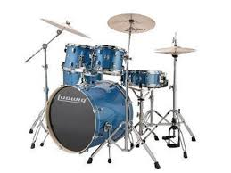

Standardni moderni komplet (za desnoruki igrač), koji se koristi u popularnoj muzici i predaje u muzičkim školama, sadrži: Mali bubanj, postavljen na postolje, postavljen između kolena igrača i igra se bubnjevima (što može uključivati rute ili četke) Bas bubanj, koji se svira pedalom kojom upravlja desna noga, a koja pokreće udarač prekriven filcom Dva ili više tomova, igrani štapovima ili četkama. Hi-hat (dve činele postavljene na postolje), koji se svira sa palicama, otvara se i zatvara levom nožnom pedalom (može da proizvodi zvuk i samo nogom) Jedna ili više činela, postavljenih na stalke, svirale su štapovima
Svi oni su klasifikovani kao perkusije bez tona, što omogućava da se muzika opiše pomoću perkusione notacije, za koju postoji labav polustandardizovani oblik i za komplet bubnjeva i za elektronske bubnjeve. Komplet bubnjeva se obično svira dok se sedi na stolici poznatoj kao tron. Dok mnogi instrumenti poput gitare ili klavira mogu da izvode melodije i akorde, većina kompleta bubnjeva to nije u stanju da postigne jer proizvode zvukove neodređene visine. Komplet bubnjeva je deo standardne ritam sekcije, koji se koristi u mnogim vrstama popularnih i tradicionalnih muzičkih stilova, od roka i popa do bluza i džeza. Ostali standardni instrumenti koji se koriste u ritam sekciji uključuju klavir, električnu gitaru, električni bas i klavijature.
Mnogi bubnjari proširuju svoje komplete iz ove osnovne konfiguracije, dodajući još bubnjeva, više činela i mnoge druge instrumente uključujući udarne udaraljke. U nekim stilovima muzike, određene ekstenzije su normalne. Na primer, neki rok i hevi metal bubnjari koriste duple bas bubnjeve, što se može postići ili sa drugim bas bubnjem ili daljinskom duplom nožnom pedalom. Neki progresivni bubnjari mogu uključiti orkestarske perkusije kao što su gongovi i cevasta zvona u svoju opremu. Neki izvođači, kao što su neki rockabili bubnjari, sviraju male setove koji izostavljaju elemente iz osnovne postavke.